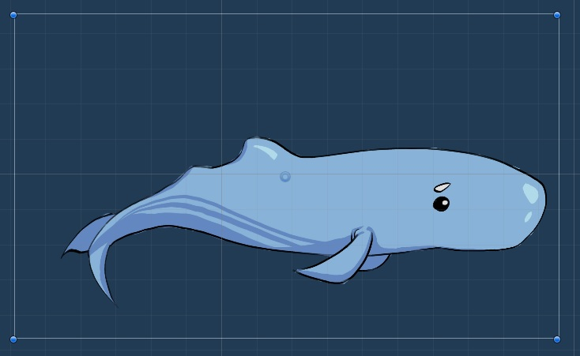
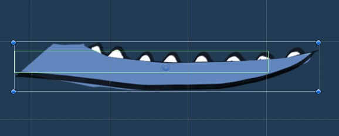
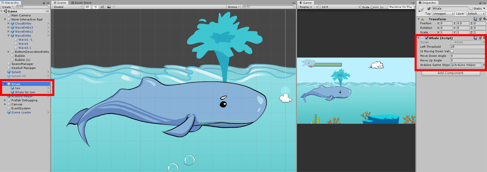

Player Control¶
Jaw Rotation¶
For the convenience of development, the idle of the whale has been divided into two parts:
- the body part (static animation which will not be interacting with any user input)
- the jaw part (which will rotate according to rheostat value)
|  |  |
{kind=link}
{kind=link}
Then, open the jaw to maximum of 60 degrees and map this to the maximum angle range the patient could open his leg (if the user chose Right leg mode of both leg mode, the system map the jaw open angle onto angle_r from Arduino Serial reading and vice versa):
// Jaw.cs (... represents other code blocks irrelevant to the current session)
...
[SerializeField] private bool isRightLeg;
private float angleJaw; // whale jaw open angle controlled by leg open angle
...
void Update () {
...
if (isRightLeg) {
angleJaw = arduinoHelper.angle_r / (calibrationMenu.angleRightConstraint / 60f);
}
else {
angleJaw = arduinoHelper.angle_l / (calibrationMenu.angleRightConstraint / 60f);
}
PotentiometerControl(angleJaw);
...
}
...
// ----- Arduino Potentiometer Control -----
void PotentiometerControl (float angle) {
transform.localRotation = Quaternion.Euler(0, 0, -angle);
}
Whale Body Movement¶
In order to make the whale idle including whate body without jaw and the jaw moving at the same time, the two Prefabs have been wrapped in a parent GameObject of Whale and the script has been executed onto the parent object as well:
The implementation of the whale body movement starts with defining the 3 plausible states a current whale could have:
// Whale.js
enum State {
movingDown,
movingUp,
stop
}
Due that the up and down movements are continous rather then instantly, the parallel running of up-down movements and other implementations have been processed simultaneously using Asynchronous Programming:
// Whale.js (... represents other code blocks irrelevant to the current session)
private void MovementHandler() {
switch (state) {
case State.movingDown:
transform.Translate(
-Vector3.up * speed * Time.deltaTime,
Space.World);
break;
case State.movingUp:
transform.Translate(
Vector3.up * speed * Time.deltaTime,
Space.World);
break;
case State.stop:
// stop the whale by assign the current position to its position
transform.position = gameObject.transform.position;
break;
default:
transform.position = gameObject.transform.position;
break;
}
}
...
// ----- Change Movements by Manipulating States -----
private IEnumerator MoveDown() {
if (isMovingDownValid) {
state = State.movingDown;
yield return new WaitForSeconds(0.75f); // give 0.75s position translation time
state = State.stop;
...
}
}
private IEnumerator MoveUp() {
if (!isMovingDownValid) {
state = State.movingUp;
yield return new WaitForSeconds(0.75f);
state = State.stop;
...
}
}
Tip
when moving either up and down, the whale will keep in moving state for 0.75s duration and then switch to stop posture.
In order to prevent the whale from moving downwards when it’s already low, or upwards when it’s already surfaced, a boolean property of isMovingDownValid has been used to check the currnet altitude and constraint the movement of the whale idle only upwards when it’s in lower altitude, and only downwards when it’s in upper altitude.
// Whale.js (... represents other code blocks irrelevant to the current session)
...
private IEnumerator MoveDown() {
if (isMovingDownValid) {
state = State.movingDown;
yield return new WaitForSeconds(0.75f); // give 0.75s position translation time
state = State.stop;
// banning the whale from moving further downwards when it's already in lower position
isMovingDownValid = false;
}
}
private IEnumerator MoveUp() {
if (!isMovingDownValid) {
state = State.movingUp;
yield return new WaitForSeconds(0.75f);
state = State.stop;
// banning the whale from moving further upwards when it's already in higher position
isMovingDownValid = true;
}
}
Splash¶
The splash manipulation has been implemented in a way animations and box colliders of the splash object are pre-defined but hidden as default when the splash has not been triggered:

// SplashManager.cs (... represents other code blocks irrelevant to the current session)
...
void Start() {
...
// initially disable the box collider, animator and sprite render and trigger later
box2D = GetComponent<BoxCollider2D>();
box2D.enabled = false;
animator = GetComponent<Animator>();
animator.enabled = false;
spriteRenderer = GetComponent<SpriteRenderer>();
spriteRenderer.enabled = false;
// initially set the splash activatable to true
isSplashActivatable = true;
}
...
When the button connected to Arduino has been pressed, all 3 components above will be set to true and thus make usable basically by calling ActivateSplash() method:
void ActivateSplash() {
box2D.enabled = true;
animator.enabled = true;
spriteRenderer.enabled = true;
Invoke("DeactivateSplash", splashDuration);
}
Note
Since the button stays at state of 1 during being pressed, this state will trigger multiple splashs in a row during the pressing. Therefore, a logic has to be implemented to allow only one splash within 0.5s by setting isSplashActivatable to false immediately after each splash:
public class SplashManager : MonoBehaviour {
[SerializeField] private float splashDuration = 0.5f;
private int buttonPressed = 0;
private bool isSplashActivatable;
...
void Start() {
...
// initially set the splash activatable to true
isSplashActivatable = true;
}
...
// ------- Button Control -------
void ButtonControlSplash() {
if (buttonPressed == 1) {
ActivateSplash();
PreventMultipleSplash();
}
}
// ------- Enable and Disable Splash Activatable to mitigate splash overlay -------
void PreventMultipleSplash() {
// prevent the user from splashing various times within short time
isSplashActivatable = false;
// set the splash activatable property back to true after a short delay
Invoke("SplashActivatable", 0.5f);
}
void SplashActivatable() {
isSplashActivatable = true;
}
// ------- Splash Manipulations -------
void ActivateSplash() {
box2D.enabled = true;
animator.enabled = true;
spriteRenderer.enabled = true;
Invoke("DeactivateSplash", splashDuration);
}
void DeactivateSplash() {
box2D.enabled = false;
animator.enabled = false;
spriteRenderer.enabled = false;
}
}
Lastly, the splash can only happen when the whale is surfaced. The information whether the whale is surfaced or not can be retrieved from the Whale class:
// SplashManager.cs (... represents other code blocks irrelevant to the current session)
[SerializeField] private GameObject whaleGameObject;
private Whale whale;
...
void Start() {
...
whale = whaleGameObject.GetComponent<Whale>();
...
}
void Update() {
...
// determine whether the whale altitude and only trigger at higher position
if (whale.isMovingDownValid && isSplashActivatable) {
KeyboardControlSplash();
ButtonControlSplash();
}
}
Tip
Using the property of isMovingDownValid of Whale class to determine the altitude level of the Whale, if it is true, that means the whale is surfaced and thus Splash is valid